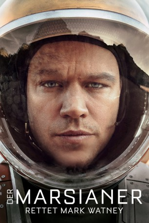

Alternativ: The Martian
Auszeichnungen: für 7 Oscars nominiert 2 GoldenGlobes gewonnen gesehen am 11.11.2017
gesehen am 11.11.2017
 
 IMDB-Wertung: 8.0 / 10
IMDB-Wertung: 8.0 / 10  Metascore:
Metascore: 
Nach einem verheerenden Sturm auf dem Mars holt die NASA seine Forscher vor Ort zurück auf die Erde. Astronaut Mark Watney wird für tot gehalten und zurückgelassen. Doch er lebt - für den Moment zumindest. Denn mit schneller Hilfe ist nicht zu rechnen. Also muss er selbst sehen, wie er ganz alleine für Vorräte für die nächsten Jahre sorgt, wie er einen Weg findet, Kontakt zur Nasa aufzunehmen und ein Lebenssignal zu senden. Parallel versuchen seine Kollegen einen Rettungsplan auszuarbeiten.
Jahr: 2015
Dauer: 141 Minuten
FSK: 12
Land: USA Studio: 20th Century FoxTonspuren: DTS - ,
Untertitel: Deutsch, Englisch,
Auflösung: 1080p (1920x1080) Größe: 12492 MB
Genre: Drama, Sci-Fi, Komödie, Abenteuer
Regisseur:  Ridley Scott
Ridley Scott
Drehbuch: Drew Goddard, Andy Weir
Soundtrack: Harry Gregson-Williams
Darsteller:
 Matt Damon als Mark Watney
Matt Damon als Mark Watney Jessica Chastain als Melissa Lewis
Jessica Chastain als Melissa Lewis Kristen Wiig als Annie Montrose
Kristen Wiig als Annie Montrose Jeff Daniels als Teddy Sanders
Jeff Daniels als Teddy Sanders Michael Peña als Rick Martinez
Michael Peña als Rick Martinez Sean Bean als Mitch Henderson
Sean Bean als Mitch Henderson Kate Mara als Beth Johanssen
Kate Mara als Beth Johanssen Sebastian Stan als Chris Beck
Sebastian Stan als Chris Beck Aksel Hennie als Alex Vogel
Aksel Hennie als Alex Vogel Chiwetel Ejiofor als Vincent Kapoor
Chiwetel Ejiofor als Vincent Kapoor Benedict Wong als Bruce Ng
Benedict Wong als Bruce Ng Mackenzie Davis als Mindy Park
Mackenzie Davis als Mindy Park Donald Glover als Rich Purnell
Donald Glover als Rich Purnell Nick Mohammed als Tim Grimes
Nick Mohammed als Tim Grimes Enzo Cilenti als Mike Watkins
Enzo Cilenti als Mike Watkins Jonathan Aris als Brendan Hatch
Jonathan Aris als Brendan Hatch Naomi Scott als Ryoko
Naomi Scott als Ryoko Brian Caspe als Timer Controller
Brian Caspe als Timer Controller Matt Devere als Satcon
Matt Devere als Satcon Mark O'Neal als Guidance
Mark O'Neal als Guidance Peter Linka als Telemetry
Peter Linka als Telemetry Declan Hannigan als Comms
Declan Hannigan als Comms Peter Schueller als NASA Break Room Worker
Peter Schueller als NASA Break Room Worker Karen Gagnon als Reporter 2
Karen Gagnon als Reporter 2 Scott Alexander Young als JPL Pathfinder Team
Scott Alexander Young als JPL Pathfinder Team Dilyana Bouklieva als Police Woman , uncredited
Dilyana Bouklieva als Police Woman , uncredited Björn Freiberg als NASA Staff Member , uncredited
Björn Freiberg als NASA Staff Member , uncredited Minouche Kaftel als NASA Staff Member , uncredited
Minouche Kaftel als NASA Staff Member , uncredited Sam Spruell als NASA Psychologist , uncredited
Sam Spruell als NASA Psychologist , uncredited Henry Winkler als Arthur 'Fonzie' Fonzarelli , archive footage, uncredited
Henry Winkler als Arthur 'Fonzie' Fonzarelli , archive footage, uncredited Eddy Ko als Guo Ming
Eddy Ko als Guo MingDatei: X:\2015(G-M)\Marsianer - Rettet Mark Watney, Der (2015, FSK12, 1920x1080) 3D.mkv seit 19.01.2016
Festplatte: HD 2015(A-Z)
 Es gibt insgesamt 129 Filme in der Gruppe '2015(G-M)'
Es gibt insgesamt 129 Filme in der Gruppe '2015(G-M)'